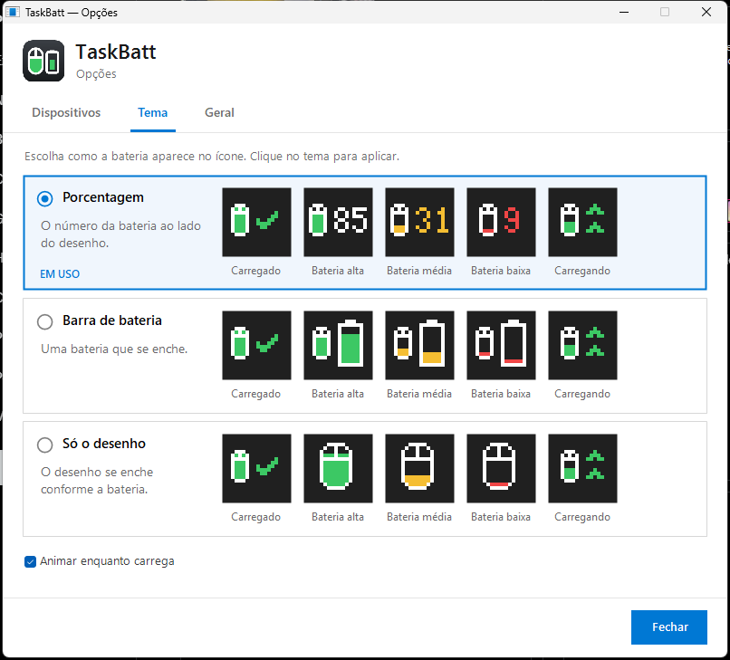
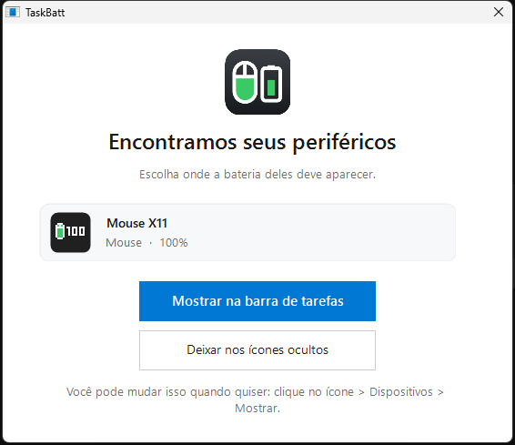
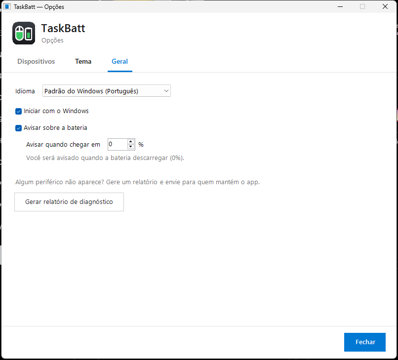

Your wireless battery,
right on the taskbar.
A bateria dos seus periféricos,
direto na barra de tarefas.
Mouse, keyboard, headset and controller — see how much charge is left at a glance, without opening any manufacturer software.
Mouse, teclado, fone e controle — veja quanto de bateria resta num relance, sem abrir o programa do fabricante.
Free · Windows 10 and 11 · No account, no ads
Grátis · Windows 10 e 11 · Sem conta, sem anúncios
Everything you need, nothing you don't
Tudo o que precisa, nada a mais
A tiny app that sits next to the clock and just works.
Um app leve que fica perto do relógio e simplesmente funciona.
All your devices
Todos os periféricos
Mouse, keyboard, headset and controller, each with its own icon.
Mouse, teclado, fone e controle, cada um com seu ícone.
On the taskbar
Na barra de tarefas
Always visible next to the clock — or tucked in the tray, you choose.
Sempre visível perto do relógio — ou nos ícones ocultos, você escolhe.
Low-battery alert
Aviso de bateria baixa
Get notified at the percentage you pick, before your mouse dies mid-game.
Seja avisado na % que escolher, antes do mouse morrer no meio do jogo.
Charging animation
Animação ao carregar
Arrows while charging, a check mark when it's full.
Setas enquanto carrega, um ✓ quando completa.
Private by design
Privado de verdade
No internet, no account, no telemetry. Nothing leaves your PC.
Sem internet, sem conta, sem telemetria. Nada sai do seu PC.
Light as a feather
Leve como pluma
Starts with Windows and pauses when the screen is off to save energy.
Inicia com o Windows e pausa com a tela desligada para poupar energia.
Pick your style
Escolha o seu visual
Pixel-crisp icons for light and dark taskbars.
Ícones nítidos, pixel a pixel, para barra clara e escura.
Percentage
Porcentagem
The number right next to the icon.
O número ao lado do desenho.
Battery bar
Barra de bateria
A little battery that fills up.
Uma bateria que se enche.
Icon only
Só o desenho
The device itself fills with charge.
O próprio desenho se enche.
Set up in seconds
Pronto em segundos
TaskBatt finds your devices on its own. Just choose where the battery shows up.
O TaskBatt encontra seus periféricos sozinho. Você só escolhe onde a bateria aparece.

Options – styles
Opções – visuais

Welcome screen
Tela de boas-vindas

Low-battery alert and startup
Aviso de bateria e inicialização
Works with most wireless devices
Funciona com a maioria dos periféricos
Bluetooth and 2.4 GHz receivers, including:
Bluetooth e receptores 2.4G, incluindo:
Questions
Dúvidas
Is it free?É grátis?
Yes. No ads, no account, no hidden fees.
Sim. Sem anúncios, sem conta, sem taxas escondidas.
My device doesn't show up. What now?Meu periférico não aparece. E agora?
Open TaskBatt › General › "Generate diagnostic report" and email it to taskbatt@gmail.com. It only contains device model codes — nothing personal.
Abra o TaskBatt › Geral › "Gerar relatório de diagnóstico" e envie para taskbatt@gmail.com. Ele só tem os códigos dos modelos — nada pessoal.
Does it change anything on my device?Ele mexe em algo no meu periférico?
No. TaskBatt only reads the battery level. It never changes settings on your devices or in the manufacturer's software.
Não. O TaskBatt só lê a bateria. Nunca altera configurações do periférico nem do programa do fabricante.
Does it need the internet?Precisa de internet?
No. Everything runs on your PC and no data is ever sent. See the privacy policy.
Não. Tudo roda no seu PC e nenhum dado é enviado. Veja a política de privacidade.
Which Windows versions are supported?Quais versões do Windows?
Windows 10 and Windows 11.
Windows 10 e Windows 11.
Never get caught with a dead mouse again
Nunca mais seja pego com o mouse descarregado
Free on the Microsoft Store.
Grátis na Microsoft Store.